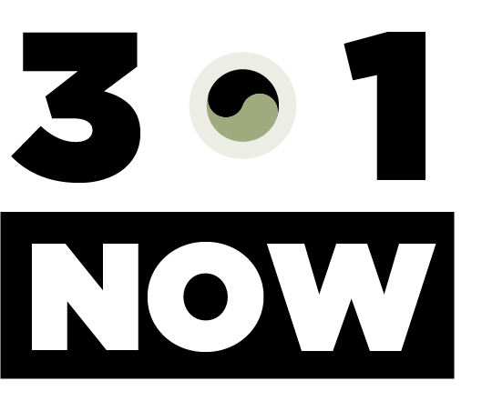

심경호 교수, 조선 후기 실학 연구서 출간
조선 후기 실학의 사상과 지식 체계를 깊이 들여다본 새 연구서가 나왔습니다. 심경호 교수는 2026년 5월 《『성호사설』의 사유방법 1·2: 변정·상론·제안의 지식학》을 펴냈습니다. 이번 저서는 실학자 성호 이익이 지식을 구성하고 사유를 전개한 방식을 체계적으로 살피며, 조선 후기 학문의 흐름과 실학사상의 의미를 새롭게 조명합니다.

조선 후기 실학의 사상과 지식 체계를 깊이 들여다본 새 연구서가 나왔습니다. 심경호 교수는 2026년 5월 《『성호사설』의 사유방법 1·2: 변정·상론·제안의 지식학》을 펴냈습니다. 이번 저서는 실학자 성호 이익이 지식을 구성하고 사유를 전개한 방식을 체계적으로 살피며, 조선 후기 학문의 흐름과 실학사상의 의미를 새롭게 조명합니다.
줄기세포와 조직공학·재생의학 분야의 연구를 꾸준히 이어온 조승우 교수가 새로운 도전을 시작합니다. 조 교수는 2026년 6월 과학기술정보통신부가 주관하는 기초연구사업 ‘리더연구(유형A)’ 신규 과제에 선정됐습니다. 이번 선정을 바탕으로 바이오융합 분야를 더욱 깊이 탐구해 나갈 예정입니다.
지방세포가 만들어지는 과정을 설명할 새로운 단서가 나왔습니다. 임대식 교수는 지방세포의 생성과 분화를 조절하는 원리를 규명하고, 그 연구 결과를 2026년 1월 종합 과학 학술지 《사이언스 어드밴시스(Science Advances)》에 발표했습니다. 이번 연구는 비만과 대사질환의 발생 원리를 이해하고 새로운 치료법을 찾는 데 도움이 될 것으로 기대됩니다.
익숙한 사물도 사진가의 시선을 만나면 새로운 이야기를 품습니다. 구본창 작가는 2026년 6월부터 7월까지 서울 국제갤러리에서 사진 기획전 《진동하는 사물들》을 선보였습니다. 구 작가가 직접 기획하고 참여한 이번 전시에는 한국 사진작가 9인의 정물 사진이 소개됐으며, 일상 속 사물에 쌓인 시간과 기억, 존재의 의미를 사진이라는 매체를 통해 조명했습니다.
거문고의 깊은 울림으로 전통의 가치를 되새기는 무대가 열렸습니다. 김영재 명인은 2026년 6월 26일 서울 국가무형유산 전수교육관 민속극장 풍류에서 거문고산조 공개행사를 열었습니다. 신쾌동류 거문고산조와 거문고병창, 합주가 어우러진 무대를 통해 전통음악의 예술적 가치와 전승의 의미를 관객들과 나눴습니다.
차세대 반도체의 성능을 높이기 위한 새로운 연구가 시작됩니다. 안종현 교수는 2026년 6월 과학기술정보통신부 기초연구사업 ‘리더연구(유형A)’ 연구자로 선정됐습니다. 이번 과제에서는 2차원 반도체를 활용한 고성능 3차원 집적소자를 개발하며 차세대 반도체의 핵심 기술을 연구할 예정입니다.
한국 원자력 기술의 자립과 발전에 평생을 헌신한 이창건 전 한국원자력문화진흥원장이 2026년 7월 6일 향년 96세로 별세했습니다. 고인은 대한민국 1세대 원자력 공학자로, 국내 최초의 원자로 운전면허 취득과 연구용 원자로 가동, 고리원자력발전소 부지 선정 및 한국형 원자로 개발 등에 기여하며 우리나라 원자력 산업의 기틀을 마련했습니다. 2013년 제53회 3·1문화상을 수상했으며, 2017년 대한민국 과학기술유공자로 선정됐습니다. 우리나라 원자력 기술 발전에 남긴 고인의 발자취를 기리며, 삼가 명복을 빕니다.
※수상자들의 직함 및 소속은 수상 당시를 기준으로 표기하였습니다.